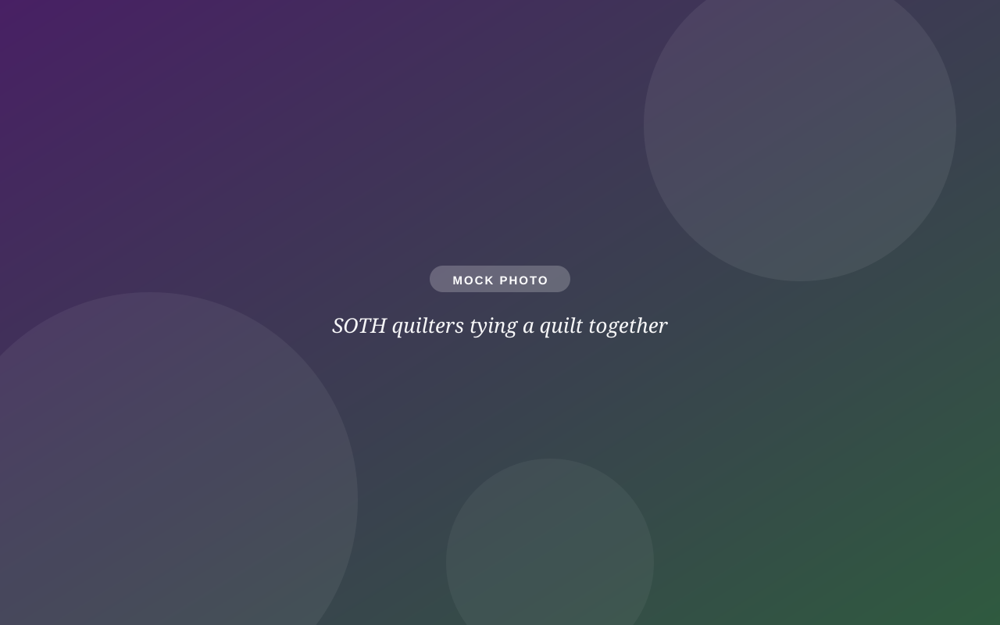

Serve & partners
Faith becomes real when we practice being neighbors.
Caring for our neighbors is central to following Jesus; it's one of our four core beliefs. SOTH makes room to serve at many speeds: an hour on a Sunday, a Tuesday morning with the quilters, or a long-haul partnership that changes a young person's life.

Start small
Serve on a Sunday.
Worship runs on volunteers, and every one of these roles can be learned in a single morning. Try one once; nobody signs you up for life.
Interested? Call the office at (952) 935-3457 or email Shawn and we'll match you with a role and a friendly trainer.

Tuesdays, 9–11 AM
The SOTH Quilters
Every Tuesday morning in Ranum Hall, a crew ties quilts that go to shelters, hospitals, and neighbors in crisis: Reach & Restore, the Marie Sandvik Center, Sojourner, and local hospitals among them.
No sewing skill needed. If you can tie a knot, you're qualified. Cotton and flannel fabric donations welcome.
A bold experiment
The Onward partnership
We're working with Onward, a nonprofit housing young adults (18–24) facing homelessness, most of them BIPOC or LGBTQ+, on a proposal to turn our vacant parsonage into Onward's second home.
It's the most concrete expression of our welcome statement we can imagine: an actual house, for actual young people, who actually need one. Watch this space, and ask Pastor Yolanda how to help.
Why this matters
- Onward has served 22 young people since 2018, with stable housing, mentorship, and community.
- Our parsonage currently sits empty. A house should hold people.
- The proposal goes through congregational conversation and a vote; every member's voice counts.
Beyond our walls
Our community partners.
A small church multiplies its reach through partnership. These are the organizations we show up for with hands, dollars, and quilts.
An hour of your time is a real gift. Honest.
Tell us what you love doing, or what you've always wanted to try, and we'll find the place it's needed.